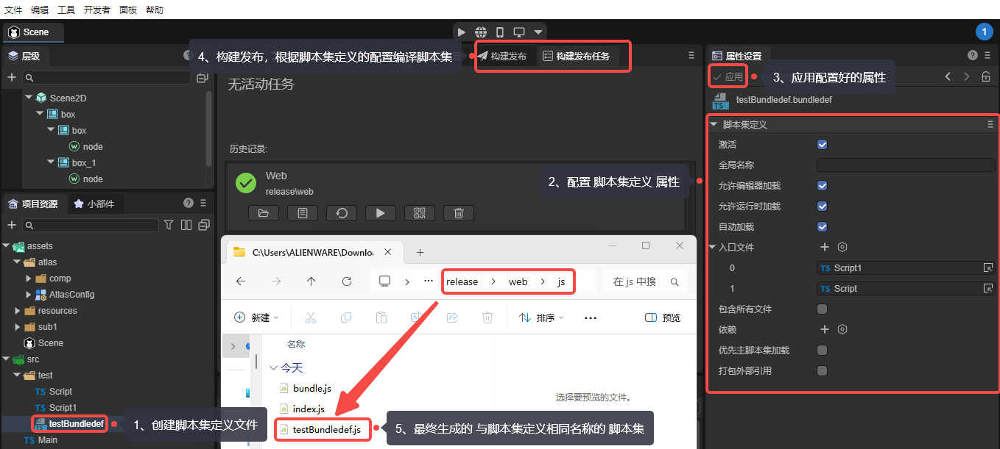
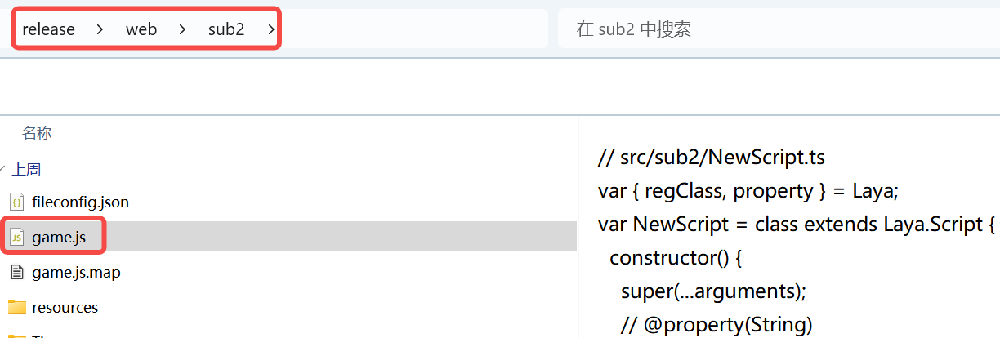
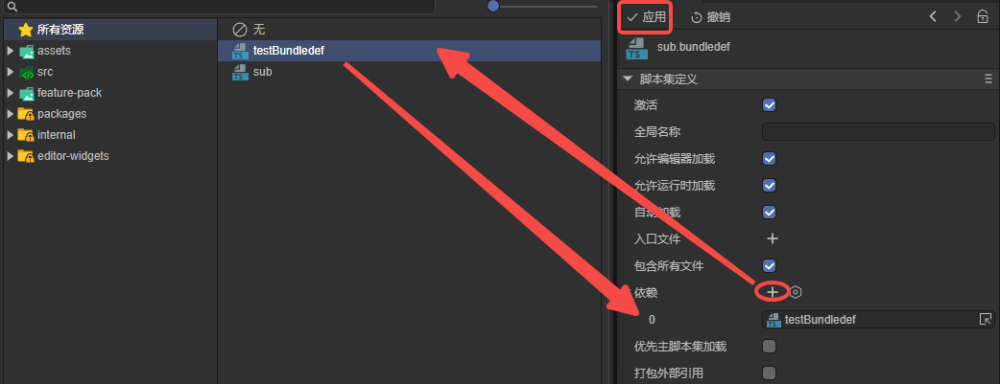

脚本集定义
Author: Charley
1、基础使用流程
1.1 什么是脚本集定义
在了解“脚本集定义”之前，我们先明确什么是“脚本集”。
顾名思义，脚本集是由一组脚本文件组成的集合。
在 LayaAir3-IDE 的默认构建发布流程中，会将项目 src 目录下的所有 TypeScript 脚本统一编译并打包为一个名为 bundle.js 的脚本集合文件。我们称之为主脚本集。
而 脚本集定义（Script Bundle Definition），则用于自定义和管理这些脚本集合的构建方式，使项目不仅局限于主脚本集，还可以根据需求创建多个独立的脚本集。
通过创建并配置 .bundledef 文件，开发者可以指定哪些 TypeScript 文件应被打包成独立的模块化 .js 文件，从而实现脚本的模块化使用。
1.2 创建脚本集定义
脚本集定义文件（ .bundledef ）通常放在一个独立的模块目录内，例如分包目录。
在项目资源面板中，通过 右键目录 → 创建 → 脚本集定义 即可生成脚本集定义文件，如图1-1所示。

（图1-1）
1.3 使用脚本集定义
脚本集定义有两种应用场景，一种是在主包中使用，另一种是分包中使用。
1.3.1 主包中使用脚本集定义
选中脚本集定义文件（.bundledef），在属性面板中完成相关配置后，点击“应用”以保存设置。
构建发布完成后，系统会在主包目录（js 文件夹）下生成一个与脚本集定义文件同名的脚本集文件，如图1-2所示。

（图1-2）
具体的脚本集定义文件属性说明将在第2小节中介绍
1.3.2 分包中使用
在构建发布设置中，通用 -> 分包 -> 分包配置 项允许将脚本集定义文件指定为该分包的入口脚本，如图1-3所示。

(图1-3)
当脚本集定义文件被设为分包入口脚本后，构建发布生成的脚本集文件名称，将不再与脚本集定义文件名一致，而是统一命名为分包目录下的 game.js，如图1-4所示。

（图1-4）2、文件配置属性说明
本小节开始 逐个介绍 脚本集定义文件 的属性配置
2.1 激活 enabled
默认勾选，勾选后脚本集定义的配置才会生效。
2.2 全局名称 globalName
一般不需要设置。用于模块命名，例如module1，那么其他模块可以通过”module1.xxx“访问这个模块导出的类和函数。
2.3 允许编辑器加载 allowLoadInEditor
默认勾选，控制脚本集是否在编辑器环境中被加载。
2.4 允许运行时加载 allowLoadInRuntime
默认勾选，发布构建时，只有勾选了该属性的脚本集才会被包含。
2.5 自动加载 autoLoad
默认勾选，决定是否在启动时自动加载执行脚本。
2.6 入口文件 entries
入口文件entries 用于控制哪些TypeScript文件需要被编译并打包到该脚本集（js）中。
在构建过程中，系统首先根据entries数组中指定的需要包含的TypeScript文件，
然后这些entries 文件引用的文件，以及被场景和预制体资源引用的文件才会被最终包含到输出中。
注意，非当前脚本集定义相同目录下的外部TS文件即使在该脚本集定义的entries中指定，也会被过滤掉。这种机制既提供了精确的文件选择能力，又保证了脚本集的封装性和模块隔离性。
在IDE中的具体操作方式为：
拖拽TS脚本文件到入口文件的右侧加号（+）处。或者，点击 加号（+）选择要编译的TS脚本文件，添加到入口文件的列表中，如图2-1所示：

（图2-1）
2.7 包含所有文件 includeAllFiles
默认不勾选，
勾选后，构建发布流程会编译脚本集定义文件所在目录下全部TS脚本文件 为 对应的脚本集（js）。
只有不勾选的时候，才会处理入口文件entries中指定的TS脚本文件。
2.8 依赖 references
依赖references是指脚本集之间的依赖关系，用于调整不同脚本集之间的加载顺序，确保依赖项总是先于被依赖项处理，从而避免因依赖顺序错误导致的运行时错误。
例如，当一个脚本集A引用了另一个脚本集B时，A依赖于B中定义的内容。那么A脚本集定义中需要设置依赖为B脚本集定义，系统则会确保B在A之前被编译和加载。
点击 + 号，添加引用功能所在的脚本集定义文件，如图2-2所示，以确保加载顺序正确。

(图2-2)
禁止依赖自己
2.9 优先主脚本集加载 loadBeforeMain
前文介绍过，主脚本集是指bundle.js。
loadBeforeMain决定了基于当前脚本集定义 编译的 模块脚本集（js） 是在 主脚本集（bundle.js）之前还是之后加载 。
如果勾选，则优先于bundle.js之前加载；未勾选，则在bundle.js之后再加载。
2.10 打包外部引用 bundleExternals
打包外部引用bundleExternals用于控制脚本集在打包时如何处理对脚本集外部文件的引用。
不勾选时，构建发布系统会检测脚本集中引用的文件是否属于其他脚本集，如果引用了其他脚本集的文件，不会将外部脚本文件内容编译打包进来，而是创建对该脚本集的引用。
默认是不勾选。保持脚本集之间的独立性，避免代码重复。
勾选后，不会进行脚本集检测，所有被引用的文件内容都会被直接打包到当前脚本集中，即使引用的脚本文件属于其他脚本集，也会被包含进来。最后生成的是完整的脚本文件内容，而不是引用。
在某些情况下，可能需要将外部依赖直接打包进来，以确保代码正常运行。当需要将相关代码聚合到一个脚本集文件（js）中时，可以勾选此选项。